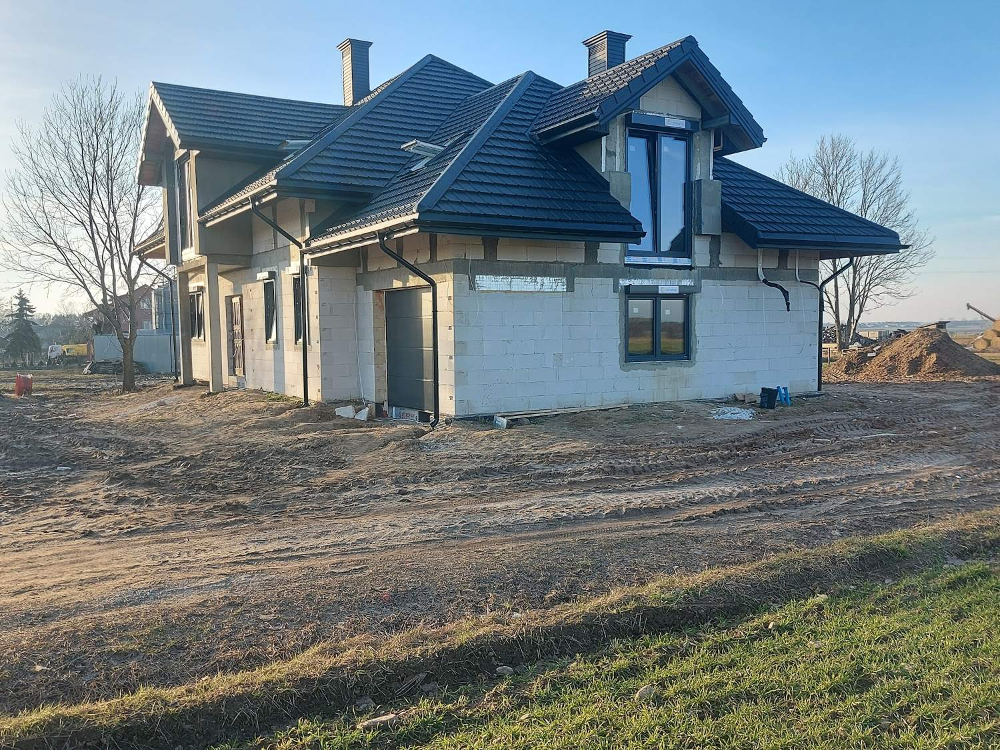
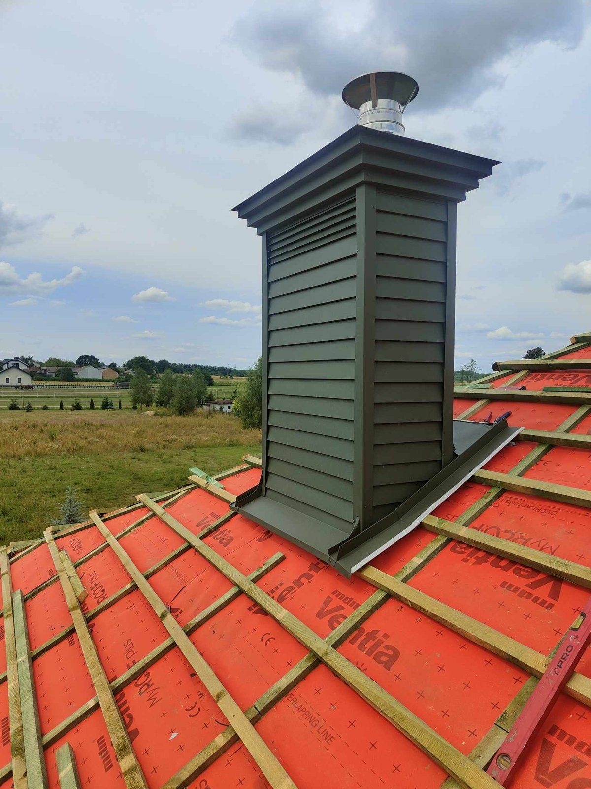

Dekarz z Nasiłowa koło Siedlec · mazowieckie i lubelskie
Dachy nowe i remonty
Montaż i wymiana pokryć, więźby, naprawy, rynny i obróbki blacharskie.
- Pokrycia dachowemontaż i wymiana
- Więźby i wiązarybudowa dachów od konstrukcji
- Rynny i obróbkimontaż, wymiana, naprawa
- Telefon502 202 444
O nas

Margo-Dach to firma dekarska Aleksandry Nasiłowskiej z Nasiłowa koło Siedlec.
Kryjemy nowe dachy i wymieniamy stare pokrycia, stawiamy więźby, montujemy rynny i obróbki blacharskie. Pracujemy na terenie województwa mazowieckiego i lubelskiego.
Jak pracujemy
Dzwonisz i mówisz, co się dzieje z dachem. Ustalamy z Tobą zakres robót i przygotowujemy wycenę. Potem robimy dach, od więźby po ostatnią obróbkę i rynnę.
Oferta
Montaż i wymiana pokryć dachowych
Nowe pokrycie na nowym domu albo wymiana starego.
Budowa dachów, więźby i wiązary
Kompleksowa budowa dachu, od konstrukcji po pokrycie.
Obróbki blacharsko-dekarskie
Obróbki kominów i inne obróbki blacharskie dachu.
Rynny
Montaż, wymiana i naprawa rynien.
Naprawy i malowanie dachów
Gdy nie trzeba wymieniać całego pokrycia.

Porozmawiajmy
Nasiłów 24
08-110 Siedlce
Zadzwoń i powiedz, co się dzieje z dachem: nowy dom, wymiana starego pokrycia, przeciek albo rynny.
Możesz też napisać na WhatsAppie albo SMS-em i dołączyć zdjęcie dachu.